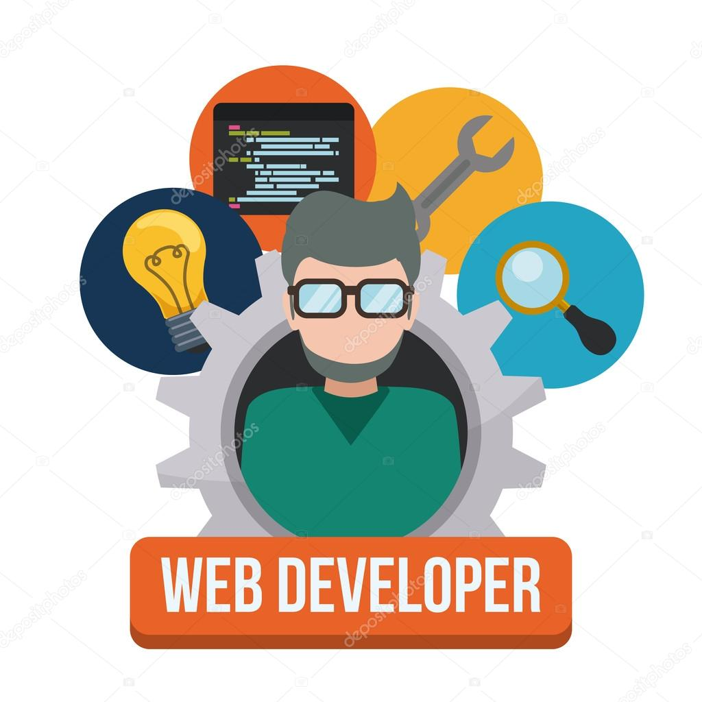

LES SERVICES
Que nous offrons actuellement

SERVICES DE MÉCANISATION
À travers nos différents services de mécanisation des opérations agricoles, nous vous accompagnons dans nos différents agricoles (labour, moisson, battage-vannage des champs et autres.)

ASSISTANCE TECHNIQUE
Nous offrons une assistance technique au profit des acteurs de la chaîne de valeur. Bénéficiez des services de nos Experts-Conseillers Agricoles et des technologies mises à votre disposition pour booster vos productions.
MISE EN RELATION DES ACTEURS
Au carrefour des acteurs des filières céréales, vous pouvez profiter dès maintenant des services de notre vaste réseau d'acteurs dans le domaine agricole. Rejoignez-nous dès maintenant et bénéficiez des nombreux avantages.